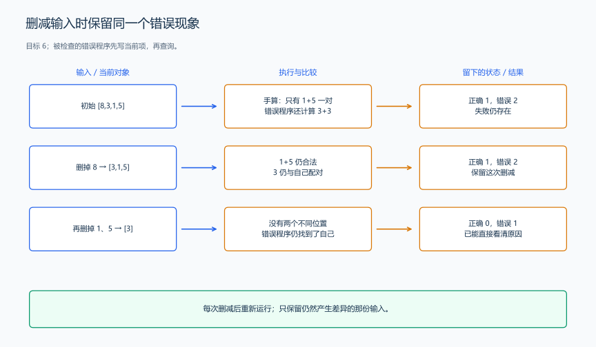

（十五） 反例构造、缩小输入与小规模对拍
随机数据并不总能碰到关键错误。可以先围绕某项规则构造数据，再把失败输入删到能手算的大小。
1. 每份测试对应一项要验证的规则
| 数对输入与目标 | 正确结果 | 要核对的规则 |
|---|---|---|
[3]，6 |
0 | 不能和当前位置配对 |
[3,3]，6 |
1 | 两个相同值可以来自不同位置 |
[3,3,3]，6 |
3 | 次数不是存在性 |
[1,1,5,5]，6 |
4 | 两组重复值贡献数量的乘积 |
[-2,5,-2]，3 |
2 | 负数同样可以成为键与搭档 |
[1,2,3]，100 |
0 | 未找到搭档时不增加答案 |
窗口例题也可以逐项试：一个窗口连续办理检查等待；三个顾客同刻到达检查输入顺序；两个窗口同刻完成检查全部释放；窗口 2 更早空闲但两者都已空闲检查编号优先。每份数据都有具体要核对的动作。
2. 把失败输入缩成能看清规则的小例子
若一份很长的数对输入失败，先尝试删掉一部分元素，并分别运行枚举与频次程序。仍有差异就保留删减结果；差异消失就撤回这次删减，换另一部分。接着可以尝试缩小数值，但每次都重新运行，确认错误仍存在。

例如“先写入再查询”的程序在 [8,3,1,5]、目标 6 上多算了一对。删掉 8、1、5 后，[3] 仍然错误；它直接显示出“同一位置被使用两次”。缩小输入是为了看清原因，不是把所有数字机械地改成 0。
3. 用独立枚举核对优化程序
前面的枚举函数逐对检查，频次函数按历史统计，排序函数按同值组统计，三者经过不同的计算过程。用小输入逐一比较结果，就能发现某种实现漏掉重复值、重复计数或错误更新。
题目原文（自拟验证程序）： 程序无需输入。枚举长度 1 到 7、元素只取 -1、0、1 的全部数组；每份数组分别检查目标 -2 到 2。用枚举、排序、频次三种方法计算数对数量。第一次不一致时输出 FAIL、数组长度、目标、数组和三份结果并结束；全部一致时输出 OK。
将前面的 countByEnumeration、countBySorting、countByFrequency 函数放在同一文件中，文件开头加入 <algorithm>、<iostream>、<unordered_map>、<vector> 和 using namespace std;。用下面的 main 替换数对输入程序的 main，不需要新的头文件。
int main() {
for (int n = 1; n <= 7; ++n) {
int total = 1;
for (int i = 0; i < n; ++i) total *= 3; // n 个位置共有 3^n 种填写方式。
for (int code = 0; code < total; ++code) {
vector<long long> a(n);
int remaining = code;
for (auto &x : a) {
x = remaining % 3 - 1; // 三进制位 0、1、2 对应 -1、0、1。
remaining /= 3;
}
for (long long target = -2; target <= 2; ++target) {
long long brute = countByEnumeration(a, target);
long long sorted = countBySorting(a, target);
long long fast = countByFrequency(a, target);
if (brute != sorted || brute != fast) {
cout << "FAIL\n" << n << ' ' << target << '\n';
for (long long x : a) cout << x << ' ';
cout << '\n' << brute << ' ' << sorted << ' ' << fast << '\n';
return 0; // 保留第一份差异输入，再按步骤手算。
}
}
}
}
cout << "OK\n"; // 这些小数组的三份计算结果全部相同。
}样例输出与解释： 输出 OK。总共生成 3+9+27+81+243+729+2187=3279 份数组，比较 16395 组“数组、目标”。三进制枚举逐位确定每个位置的取值，覆盖了小值域中的重复值、负数和不同排列。
验证程序的复杂度： 最大长度记为 L，目标共有 5 个；长度 n 的数组有 \(3^n\) 份，每份的枚举计算需要 \(O(n^2)\)，因此总时间为 \(O(\sum_{n=1}^{L}3^n n^2)\)，同时保存数组和频次表需要 \(O(L)\) 空间。这里 L 为 7，用较慢但直观的枚举来检查较快的实现。
对拍得到的是这些输入上的一致结果。正确性理由仍来自“每一对在较后的那个位置恰好计入一次”的证明；类型检查还要代入 200000 项的计数，窗口时间也要代入较长的办理过程。证明、手算、对拍分别检查不同的部分。